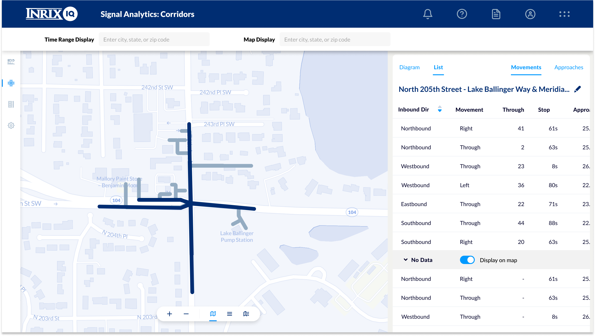

INRIX Signals Detail
We needed to get more granular with the data we were showing. Our current intersection display was great for showing total traffic for a given direction but failed to show details on the exact route a vehicle was taking. The solution was to take our existing model and use it to open up a more detailed panel showing every movement for an existing approach.
I was the sole designer on this, working again with engineers and the product manager.
The challenge this time was in the design. I was trying to display dozens of unique movements that often overlap for 90 percent of their path. Making the diagram as interactive as possible was what I came up with given the limited space. Letting users investigate paths by hovering over them on the map or hovering the tied-in list view gives immediate feedback on what they are looking at. Another tool was to make only the primary paths prominent in the display. The paths with only one or two movement counts are demoted hierarchically, giving the most important information priority.
New detail view of intersection including movements
Movement highlighted on diagram
New sub-movement view showing all possible paths